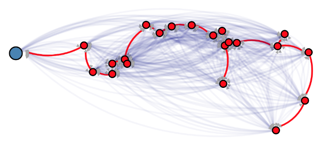

Minimum Spanning Tree on US Cities (Prim's Algorithm)
Goals
The purpose of this assignment is to learn to
- Implement Prim's Minimum Spanning Tree Algorithm and demonstrate its
application using US city data.
- Use the BRIDGES Graph class to store the input graph
- Experiment with two variants of the algorithm
- Visualize the results using BRIDGES
Programming
Tasks
-
Build the graph using the US City data - refer to the tutorial on
US cities
for accessing the data
-
Implement Prim's MST algorithm, using the US City data a
- Variant 1: Greedy operation uses the entire unvisited graph
- Variant 2: Greedy operation visits only the fringe nodes of the tree
-
Visualize using BRIDGES
- Highlight the starting city
- Label the nodes with city names
- Use the map facilities in BRIDGDES to embed the MST in a US map, using
the setMapOverla()y and setMap() methods of the BRIDGES class.


References
GraphAdjList Java
GraphAdjList C++
GraphAdjList Python